ara-shell-barrette · ara
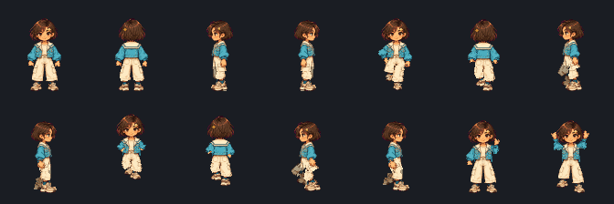
PRIVATE REVIEW CANDIDATE. Public exact-manifest approval pending. The previous Contemporary20 approval is preserved. Human visual acceptance and physical-device certification are not inferred from tests.
QA · Root cause · Six fictional-era depiction review · 26 identities · Protected hashes
Rows: Juni bob; Minjun cap; Doyun garden hat; Ara approved bun control; Juni bob+ornament; Minjun layered+cap. Columns: front/back/left/right idle, front walk, back run, wave, celebrate. Open image for exact native resolution. This gallery is a candidate, not an assertion of owner art approval.

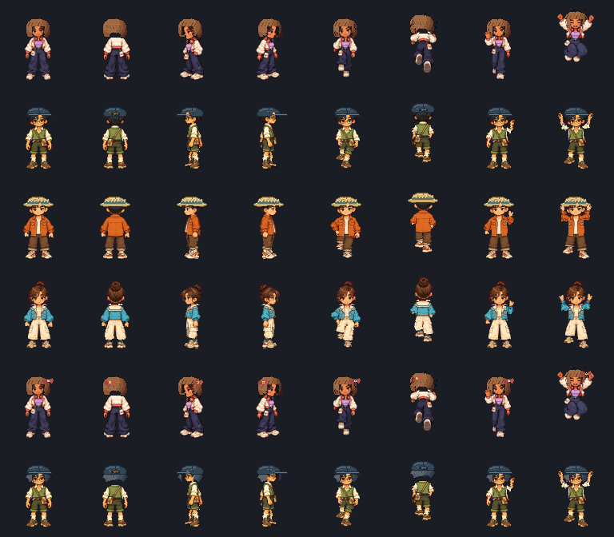
Actual before60px/after0px reduced-motion camera reproduction · Four-character input / cosmetics matrix
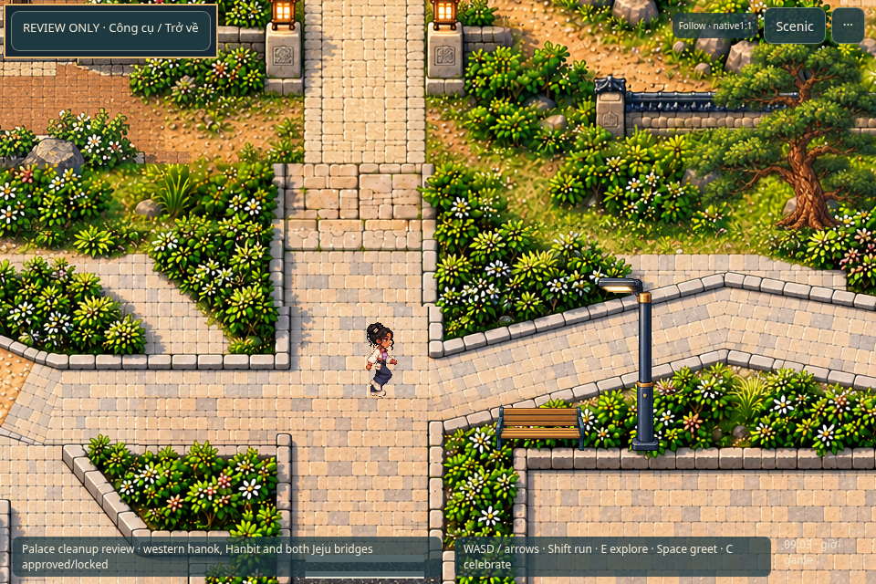
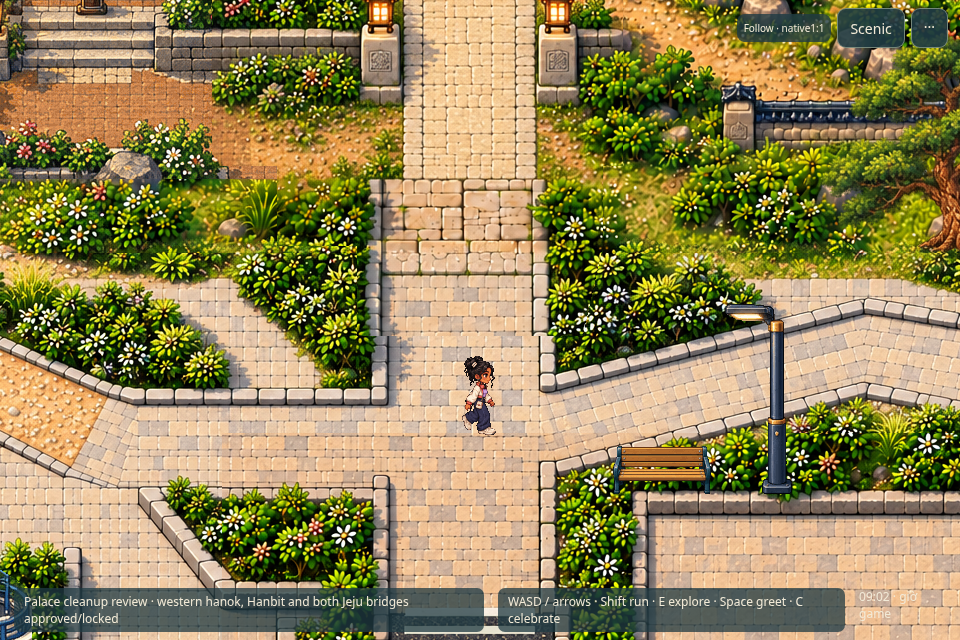
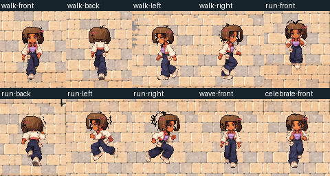
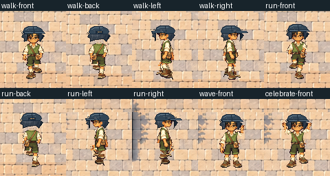
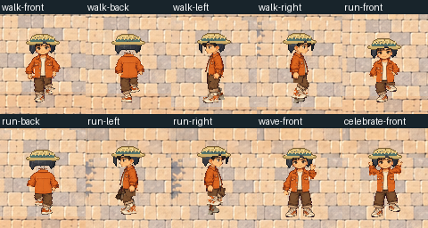
First20 retained. Final6 already-fictional public identities, using approved native art. Bounded contextual encounters; not26 actors loaded simultaneously.
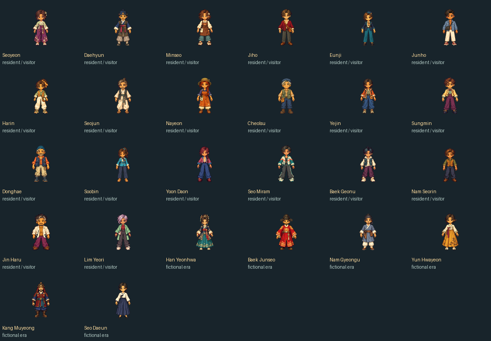
Cells: front/back/left/right idle; front/back/left walk; right walk; front/back/left/right run; wave; celebrate. Old source files are preserved. Unchanged barrette is included as an explicit control, not falsely claimed repaired.

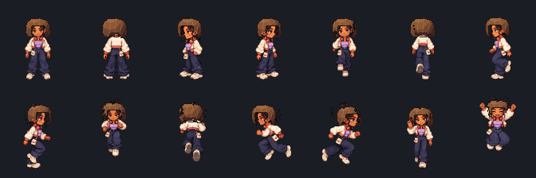
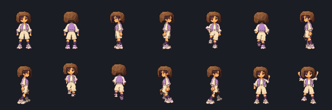
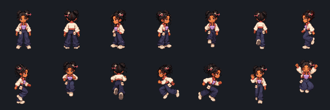
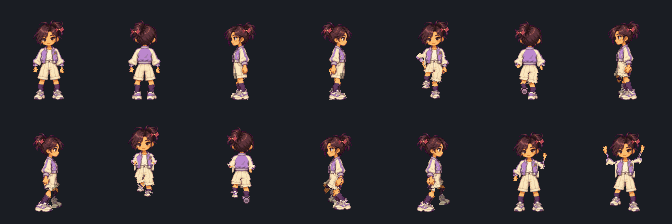
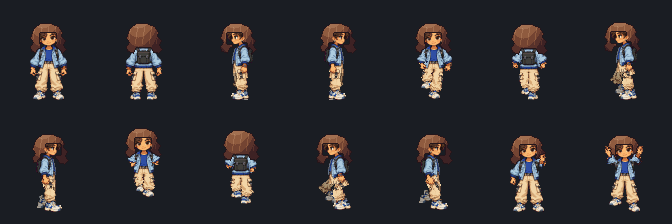
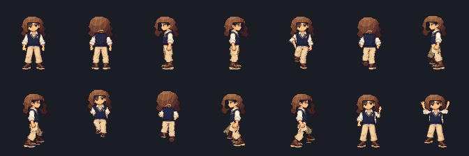
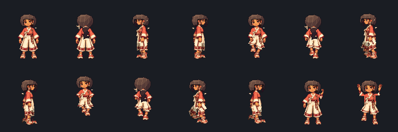
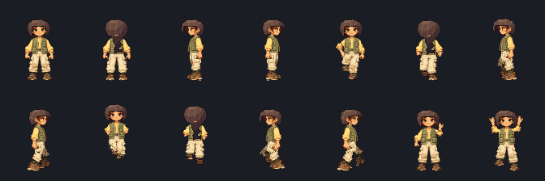
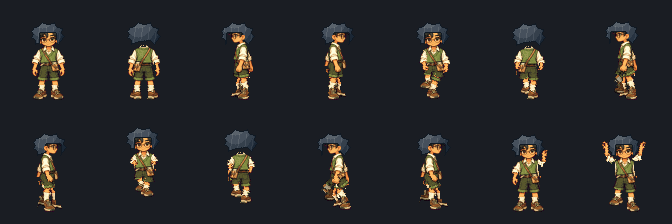
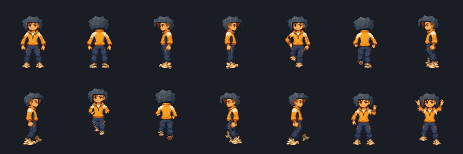
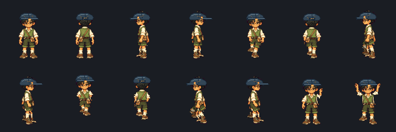
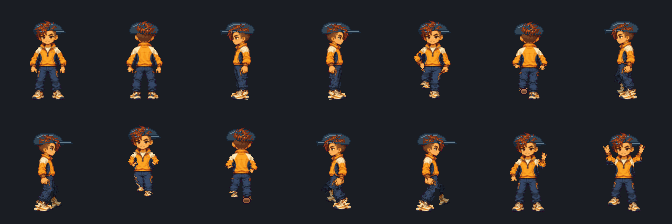
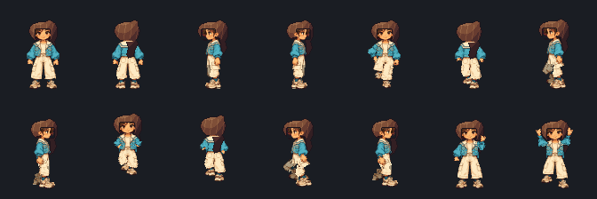
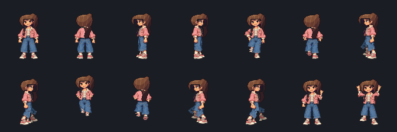
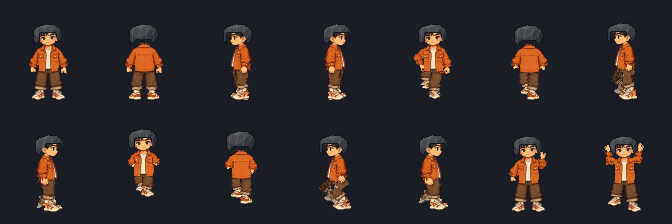
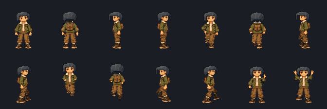
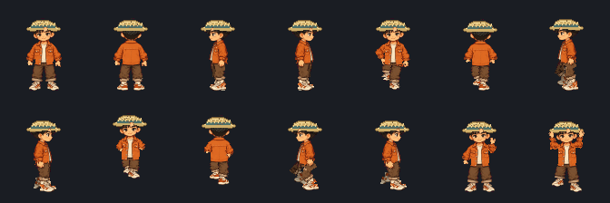
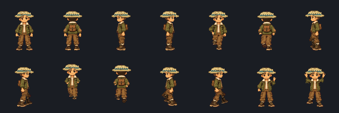
Exact new public payload needs the owner's consolidated approval, including six previously excluded fictional-era depictions and revised head patches. No release workflow has been triggered for this candidate. Android/iPhone physical devices and hardware GPU remain NOT TESTED.